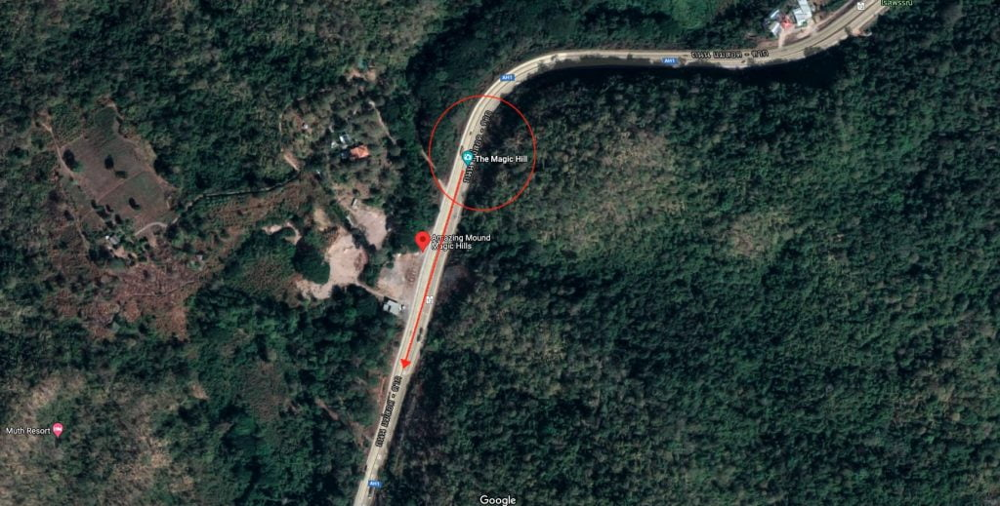
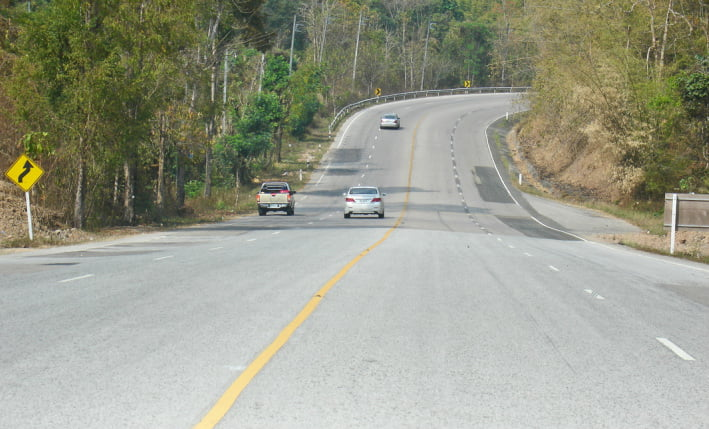
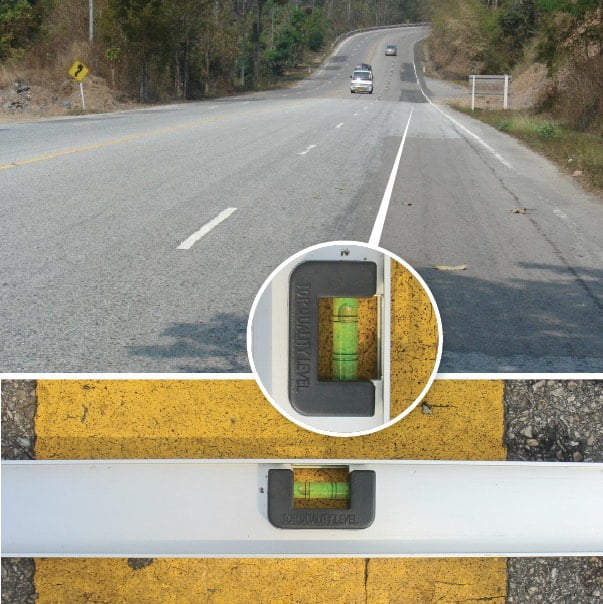

ကျွန်တော်က ဂုံးတက်ကြီး ဆိုတော့ ကားက ဂုံးဆင်းအတိုင်း နောက်ပြန် လိမ့်သွား လိမ့်မယ်ပေါ့။ ဒါပေမယ့် ထူးဆန်းတာက ကားက ဂုံးဆင်းအတိုင်း နောက်ပြန် လိမ့်မသွားပဲ အတက်အတိုင်း အပေါ်ကို ဖြည်းဖြည်းချင်း လိမ့်ပြီး တက်သွားတာပါပဲ။ ကျွန်တော်လဲ အတော်လေး အံ့ဩတကြီး ဖြစ်သွားတာပေါ့။
အဲ့သည်တုန်းက ဘေးက ကားတွေက တောက်ရှောက် ဖြတ်နေတာ ဆိုတော့ အန္တရာယ် များတာနဲ့ ကားပြင်ထွက်ပြီးလမ်းပေါ်မှာ ထွက်တိုင်းတာ ထွာတာတွေတော့ မလုပ်နိုင် ခဲ့ပါဘူး။ (မောင်းပို့ပေးတဲ့ မိတ်ဆွေကို အားနာတာလဲ ပါတာပေါ့။) ဒါပေမယ့် စိတ်ထဲကတော့ ဒီကိစ္စကို သိအောင် ရှာဖတ်မှပဲ ဆိုပြီး တေးထားခဲ့ ပါတယ်။ (သဘာဝ နယ်လွန် ဖြစ်ရပ်တွေကို ယုံကြည်မှု မရှိတာရယ်၊ သိပ္ပံ နည်းကျတဲ့ ရှင်းလင်းချက် ရှိရမယ်လို့ ယုံကြည်တာရယ် မို့လဲ ဖြစ်ပါတယ်။)

သိပ္ပံရှင်းတမ်း
ဒါကို အနောက်တိုင်း မှာတော့ Magnetic Hill (သံလိုက်တောင်) လို့ ခေါ်ကြပါတယ်။ ဒီ သဘာဝ ကို သိပ္ပံ ပညာရှင်တွေက အသေးစိတ် လေ့လာ ထားကြပါတယ်။“သံလိုက်တောင်” လို့ ခေါ်ပေမယ့် ဒါဟာ တကယ်တော့ ဘာ သံလိုက် စက်ကွင်း ဆွဲအားကြောင့်မှ မဟုတ်ပါဘူး။ သံလိုက်တောင် တွေရဲ့ ဝန်းကျင်မှာ သံလိုက်ဆွဲငင်အား ရှိမလားလို့ ရှာဖွေ မှုတွေ အားလုံးကလဲ မအောင်မြင်ခဲ့ ပါဘူး။ ဒီထက်ပိုပြီး ထူးဆန်းတာ ကတော့ သံမပါတဲ့ ပလတ်စတစ် ဘောလုံး၊ ပင်ပေါင် ဘောလုံး၊ တင်းနစ် ဘောလုံး လိုမျိုးတွေ ချလိုက်လဲကုန်းတက် အတိုင်း လိမ့်ပြီး တက်သွားတာပဲ ဖြစ်ပါတယ်။
ထိုင်းနိုင်ငံ မဲဆောက် မြို့ အဝင် အဝေးပြေး လမ်းပေါ်က ဒီ မှော်ဝင်တောင် နဲ့ ပါတ်သက်လို့ ထိုင်းနိုင်ငံ ချူလာလောင်ကောင်း တက္ကသိုလ်က ဘူမိဗေဒ ၎ာန ငလျင်သုတေသန ၎ာနခွဲမှူး တွဲဖက် ပါမောက္ခ ဒေါက်တာ ပွန်ယာ ချာရူဆီရီ နဲ့ ကျောင်းသားများဟာ အသေးစိတ် ကွင်းဆင်း လေ့လာမှု ပြုခဲ့ကြပါတယ်။
သူတို့ရဲ့ တွေ့ရှိချက် အရ ဒီ မှောင်ဝင်တောင် (သို့) သံလိုက်တောင်ဟာ တကယ်တော့ ဂုံးတက် ဖြစ်နေတာ မဟုတ်ပဲ ဂုံးဆင်း ဖြစ်နေတာပါတဲ့။ ဒါပေမယ့် ပတ်ဝန်းကျင် မြင်ကွင်း တွေကြောင့် ဒီနေရာ ရောက်နေတဲ့ သူတွေရဲ့ မြင်ကွင်းထဲမှာ အဆင်းကြီးကို အတက် အနေနဲ့ ထင်ယောင် ထင်မှား မြင်ရတာ ဖြစ်ပါတယ်လို့ ရှင်းပြပါတယ်။
ဒီလမ်း နေရာကို ရေချိန်နဲ့ တိုင်းကြည့်တဲ့ အခါမှာလဲ သူပြောသလိုပဲ ရေချိန်က အဆင်း ဆိုတာကို ပြနေပါတယ်။ ဒါပေမယ့် ဒီနေရာမှာ ရပ်ပြီး ကြည့်တဲ့ အခါမှာ ဘယ်လိုပဲ ကြည့်ကြည့် အဆင်းလို့ကို မမြင်ပဲ အတက် အနေနဲ့ပဲ မြင်နေရပါတယ်။ (ဒါကလဲ ကျွန်တော့် မျက်မြင် ကိုယ်တွေ့ ဖြစ်ပါတယ်။)
ဒါဆို ဘာလို့ အဆင်းကို အတက်လို့ မြင်နေ ရတာလဲ။ ဒီတောင်ဟာ တကယ်ပဲ မှော်ဝင်နေပြီး မမြင်ရတဲ့ ပရ လောကသားတွေက ဒီနေရာကို ဖြတ်လာတဲ့ သူတွေကို အထင်မှားအောင် ပြုစား ထားလို့လား။

အမြင်အာရုံလှည့်စားမှု (Optical Illusion)
ပါမောက္ခ ပွန်ယာ က ဒီ သဘာဝ နဲ့ ပါတ်သက်ပြီး အခုလို ရှင်းပြပါတယ်။“အနီးအနားက ရွာသားတွေ၊ သစ်တော ဌာနက အရာရှိတွေ ကျွန်တော့်ဆီကို ဒီကိစ္စနဲ့ ပါတ်သက်လို့ ခနခန လာပြီး မေးကြပါတယ်။ ထိုင်း ရုပ်သံ ဌာန တွေကတောင် မကြာခန လာမေး ကြပါတယ်။ ဘာလို့ဆိုတော့ သူတို့က ဒီ အကြောင်းကို ရုပ်သံ အစီအစဉ် ရိုက်ချင် ကြလို့ပါ။ သူတို့က ဒီ ထူးဆန်းတဲ့ မှော်ဝင်တောင် ကို ကမ္ဘာက သိအောင် ရိုက်ကူး တင်ပြ ချင်ကြတာလေ။”
“သူတို့က ဒါနဲ့ ပါတ်သက်လို့ ဘာလို့ဆိုတဲ့ အကြောင်းပြချက် သိချင်ကြတယ်။ သူတို့ကို ကျွန်တော်က ဘာ့ကြောင့် ဖြစ်ရလဲ ဆိုတာ ရှင်းပြလိုက်လို့ အကြောင်းစုံ သိသွားကြတော့ သူတို့တွေ သိပ်ပြီး စိတ်ဝင်စားမှု မရှိကြတော့ဘူး။”
“ဒီတောင်နဲ့ ပါတ်သက်လို့ ဘာမှ ထူးဆန်းတဲ့ မှော်တွေ နာနာဘာဝ တွေ ဘာမှ မရှိပါဘူး။ ဒါကိုလဲ ကျွန်တော်တို့ သက်သေ ပြခဲ့ ပြီးပါပြီ။”
“ဒီလို ဖြစ်နေရတာက ဂုံးဆင်း ကို မျက်လုံးက ဂုံးတက် အဖြစ် မှားယွင်းပြီး မြင်နေလို့ ဖြစ်ပါတယ်။ တကယ်က ဒီနေရာဟာ အတက် မဟုတ်ပဲ အဆင်းကြီး ဖြစ်နေတာပါ။”

ပါမောက္ခ ပွန်ယာ နဲ့ အဖွဲ့ဟာ ဒီတောင် ပါတ်လည်က မြေသားထဲမှာ သံလိုက်ဓါတ် တွေ ရှိမရှိ ဆိုတာကိုလဲ အသေးစိတ် သုတေသန ပြုခဲ့ ကြပါသေးတယ်။ သူတို့ရဲ့ ရှာဖွေမှုမှာ ဘာ ထူးခြားတဲ့ သံလိုက်စက်ကွင်းမှ ရှာမတွေ့ ခဲ့ပါဘူး။
“ကျွန်တော် အပါအဝင် အခြား ထင်ရှားတဲ့ ဘူမိဗေဒ ပညာရှင် တွေဟာ ဒီတောင်ကုန်းကို ကွင်းဆင်း လေ့လာ ခဲ့ကြပါတယ်။ ပထမတော့ ကျွန်တော်တို့က ဒီ တောင်နား ပါတ်ဝန်းကျင်မှာ သံလိုက်ကျောက် အစုအပုံတွေ တွေ့မလားလို့ပေါ့။ ဒါပေမယ့် ကျွန်တော်တို့ သံလိုက် ရှာတဲ့ ကိရိယာ တွေနဲ့ ရှာကြည့်တော့ ဘာမှ မတွေ့ရ ပါဘူး။”
“ဒါပေမယ့် ကျွန်တော်တို့ ဒီ တောင်ကုန်း လမ်းကျော တလျှောက်ကို GPS အမြင့်တိုင်း ကိရိယာနဲ့ တိုင်းကြည့်တဲ့ အခါကျတာ့ အဖြေမှန်ကို တွေ့ရပါတယ်။ ဒီ ကိရိယာက သုနေသန အဆင့် ကိရိယာ ဖြစ်ပြီး မဆိုစလောက် အမြင့်ကွာခြားမှု ကိုတောင် အတိအကျ တိုင်းနိုင်တဲ့ ကိရိယာပါ။”
“ဒီ ကိရိယာနဲ့ တိုင်းတော့ ဒီ နေရာက မြေပြင် အနိမ့်အမြင့်ဟာ တကယ်က အမြင်ယောင် ဖြစ်နေတာ တွေ့ကြရ ပါတယ်။”
ဒီ နေရာမှာ ပါမောက္ခ ပွန်ယာ ရဲ့ ရှင်းလင်းချက်ကို အနည်းငယ် ချဲ့ထွင်ပြီး ရှင်းပြဖို့ လိုလာပါမယ်။ အဓိကက ဘာလို့ ကုန်းဆင်းကြီးကို ကုန်းတက် အနေနဲ့ မြင်နေရ တာလဲ ဆိုတာပါပဲ။
ဂုံးတက် (သို့) ဂုံးဆင်းဟာ ပြေပြေလေး ဖြစ်နေမယ် ဆိုရင် လူတွေ အနေနဲ့ ဒီလမ်းဟာ ပြင်ညီလား၊ တက်နေလား၊ ဆင်းနေလား ဆိုတာကို သေခြာ မခွဲခြား နိုင်ပါဘူး။ ဒီလို ပြေပြေလေး ဖြစ်နေတဲ့ အဆင်း၊ အတက် တွေအတွက် အဆင်းလား အတက်လား ဆိုတာကို ပတ်ဝန်းကျင် မြင်ကွင်း တွေကို ကြည့်ပြီး ဦးဏှောက်က ဆုံးဖြတ်ပေးတာ ဖြစ်ပါတယ်။
ဒါပေမယ့် တခါတလေမှာ ပတ်ဝန်းကျင်က တောင်ကုန်းတွေ၊ မြေမျက်နှာ သွင်ပြင်တွေ၊ သစ်ပင်တွေ ပေါက်နေ ပုံတွေက မြင်ရတဲ့ သူရဲ့ အမြင်အာရုံကို ဝေဝါးသွားအောင် လှည့်ဖြား နိုင်ပါတယ်။ ဒီ အခါ ဦးဏှောက်က အမြင်ရဲ့ လှည့်စားမှုကြောင့် အဆင်းကို အတက်၊ အတက်ကို အဆင်းလို့ မှားယွင်းပြီး ဆုံးဖြတ်မိ သွားတာမျိုး ဖြစ်တတ်ပါတယ်။
မှော်ခရီးသွားလုပ်ငန်း
ဒီ သိပ္ပံ အမြင်နဲ့ ရှင်းပြမှုကို မဲဆောက်က ဒေသခံ တွေကတော့ လက်မခံ ကြပါဘူး။ သူတို့က ဒီနေရာမှာ မွေး၊ ဒီနေရာမှာ ကြီးလာကြတဲ့ သူတွေလေ။ သူတို့ ပြောတာက ဒီကုန်းမှာ အခုလို ကားတွေ ပြောင်းပြန် လိမ့်တက်နေတာ ဒီလမ်းကို ၄ လမ်းသွား လမ်းမကြီး မချဲ့မှီ ကတဲက လို့ ဆိုပါတယ်။ဒီ တောင်ကုန်းက နံမည် ကျော်တာမို့ ဒီနား ရောက်လာတဲ့ ကားတွေဟာ ဒီနေရာ ရောက်ရင် ကားရပ်ပြီး ဟုတ်မဟုတ် စမ်းသပ် ကြည့်ကြပါတယ်။ စမ်းသပ်တဲ့ သူတိုင်းကလဲ အံဩတကြီး ဖြစ်သွားကြ တာပဲ ဖြစ်ပါတယ်။ အချို့ကတော့ ဒီနေရာမှာ နတ်တွေ၊ မှော်တွေ ရှိတယ် ဆိုပြီး ပြောဆို ကြပါတယ်။
ယခုအခါ မဲဆောက် ဒေသခံ အချို့က ထိုင်းခရီးသွား ဝန်ကြီးဌာန အနေနဲ့ ဒီ “မှော်ဝင်တောင်” ကို ကမ္ဘာလှည့် ခရီးသွားတွေကို ဆွဲဆောင်မှု (tourist attraction) တစ်ခု အနေနဲ့ ဖြစ်လာအောင် ပြုလုပ် သင့်တယ်လို့ တိုက်တွန်းမှု တွေလဲ ရှီနေပါတယ်။
ထိုင်း တက္ကသိုလ် တွေက ဘူမိဗေဒ ပညာရှင်တွေကတော့ ဒီ အနီးအနား ပတ်ဝန်းကျင်ကို သေချာ အသေးစိတ် မြေပုံ ရေးဆွဲပြီး ဒါဟာ သိပ္ပံ နဲ့ ရှင်းပြလို့ ရတဲ့ သဘာဝ ဖြစ်စဉ် တစ်ခုသာ ဖြစ်တယ် ဆိုတာက ပြသနိုင်ဖို့ ကြိုးစားနေ ကြတယ်လို့ သိရပါတယ်။
Reference:
Thailand’s Gravity Defying Magic Hill